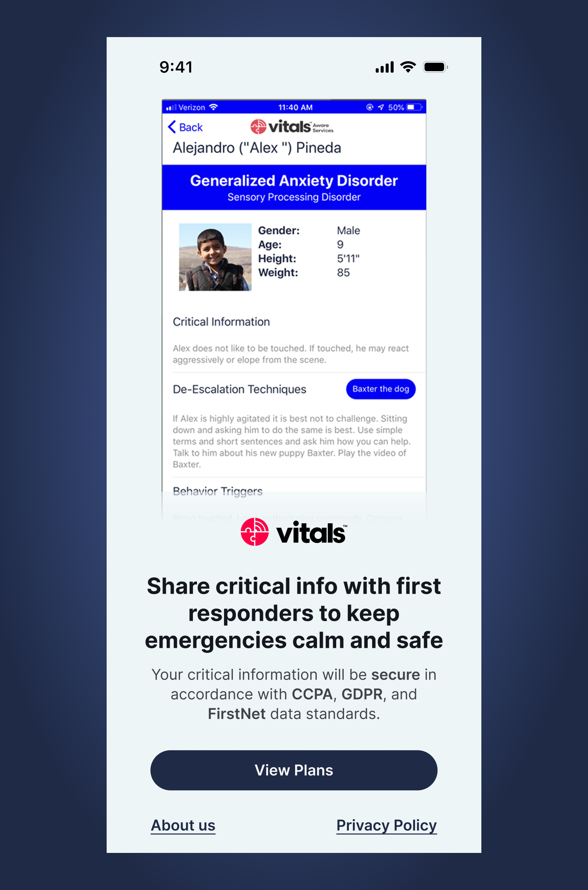
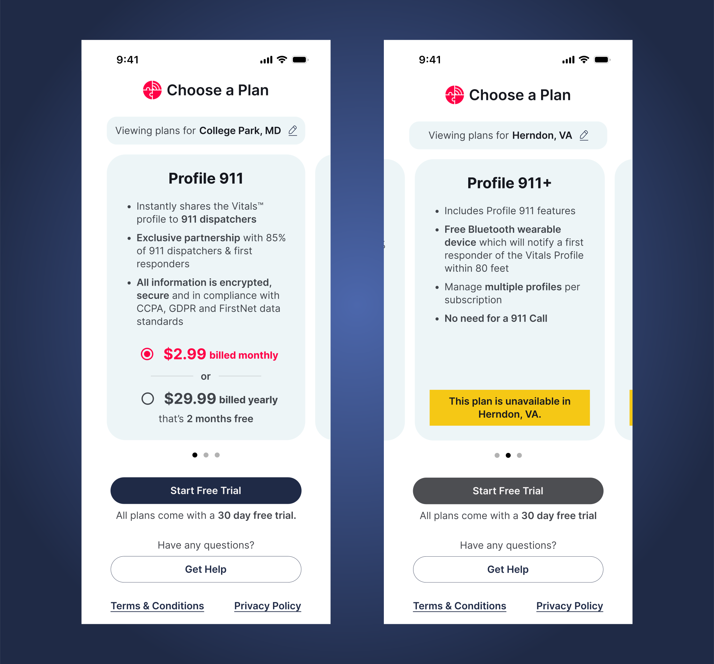
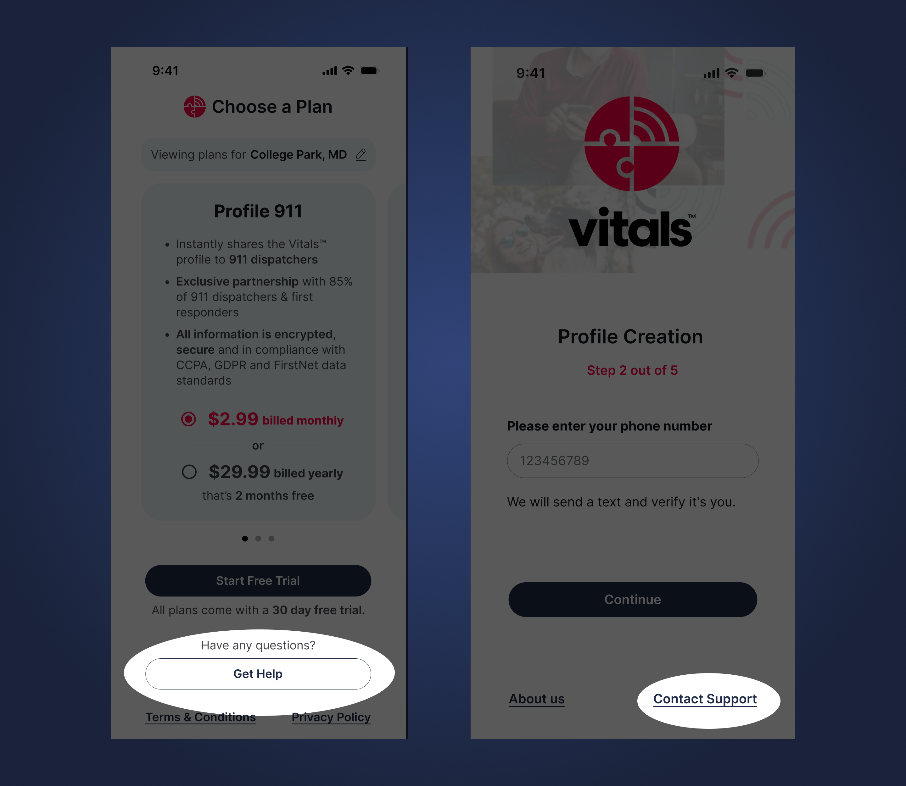

Reducing Friction, Boosting Vitals Subscriptions
Vitals is a digital medical ID designed for vulnerable individuals in emergency situations. It contains essential information about a person’s conditions, behaviors, and care needs.
During emergencies, first responders can instantly access these profiles—helping them understand and respond appropriately to individuals who may have difficulty communicating.
This bridges critical information gaps when it matters most.

Despite its usefulness, 92% of users don’t subscribe after signing up.
We interviewed users from this 92% to understand why they chose not to subscribe.
Lack of trust
Users didn’t trust the product enough to commit before understanding its value.
70% of participants expressed discomfort sharing personal information before fully understanding the app’s purpose and value.

Confusing plan selection
Participants struggled due to unclear terminology in plan descriptions and no upfront indication that the Profile + Location plan was only available in select states.

Poor visual design
Key affordances such as sample profiles and free trial indicators went unnoticed, reducing users’ confidence to proceed.

A redesigned signup journey focused on trust, clarity, and momentum—helping users understand value before committing.
Building trust
The redesigned welcome screen pairs a clear value proposition with data privacy standards, making both benefits and safeguards immediately visible.
It includes prominent Privacy Policy and About Us options for users who want reassurance before proceeding.
Easier plan selection
All plans are displayed side-by-side using plain language and feature comparisons.
Users are clearly informed when a plan isn’t available in their state.
The free trial is prominently highlighted, enabling a risk-free start and improving conversion confidence.
Streamlined data collection
Bio-data forms are broken into small, manageable steps.
Each step explains why the information is needed and how it will be used.

Quick access to help
Help options remain accessible throughout the signup flow, reassuring users and preventing drop-off when questions arise.
Estimated 16% increase in subscriptions.
Methods
- Heuristic evaluation of signup and subscription flows
- Usability testing with think-aloud session
- Post-test interviews focused on subscription intent
Participant Pool
- Patients, caregivers, and users who identify as both
- Diverse age groups, races, and ethnicities
- Varied levels of technical proficiency
- Experience interacting with emergency service personnel
Key Sources of Insight
- User Research Findings: Actionable insights from usability tests and evaluations
- Business Model Analysis: Review of how Vitals converts users beyond app signups
- Design Best Practices: Applied principles around trust, persuasion, and emotional design